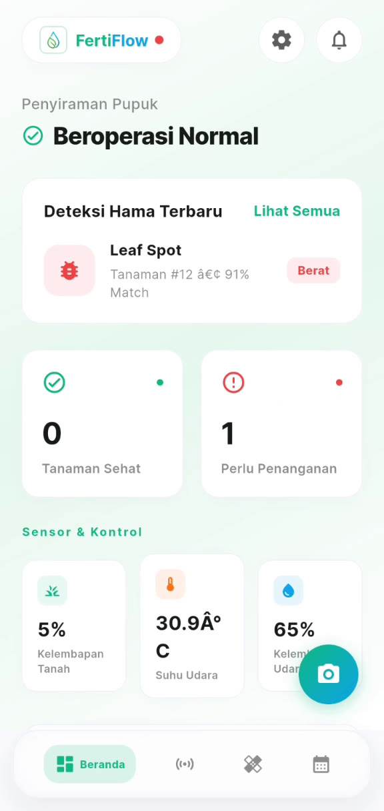
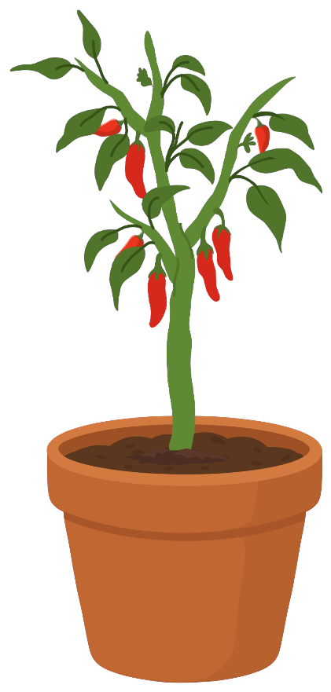
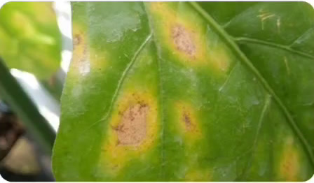
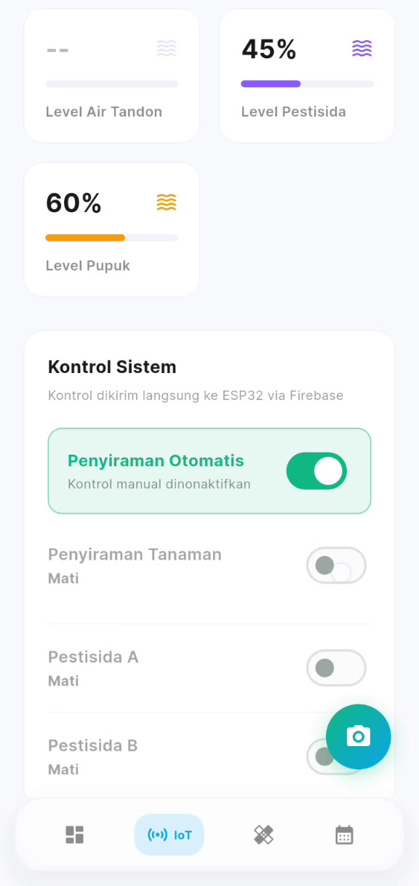
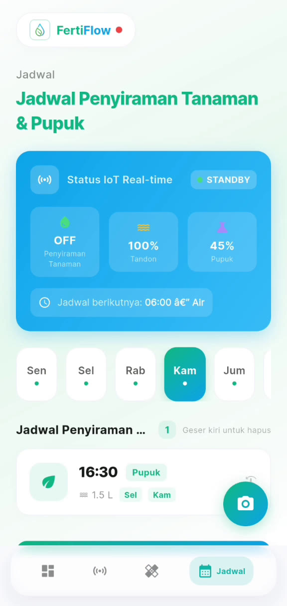
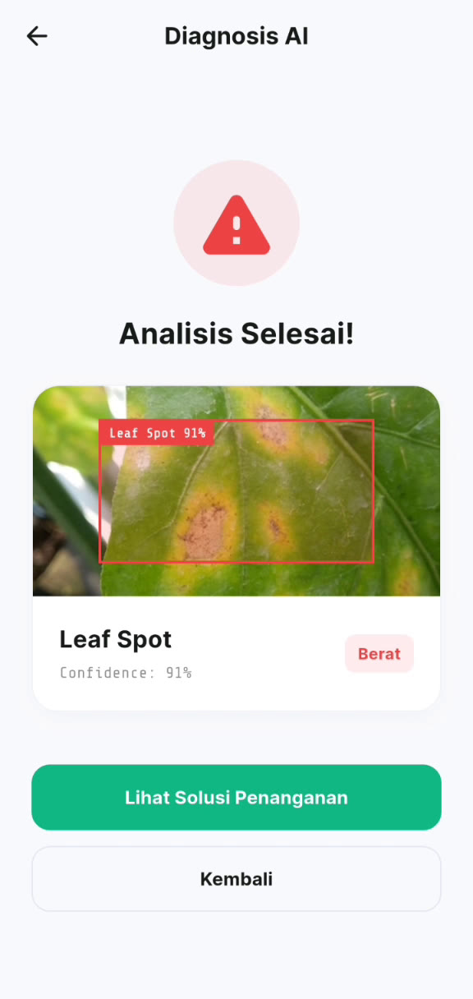
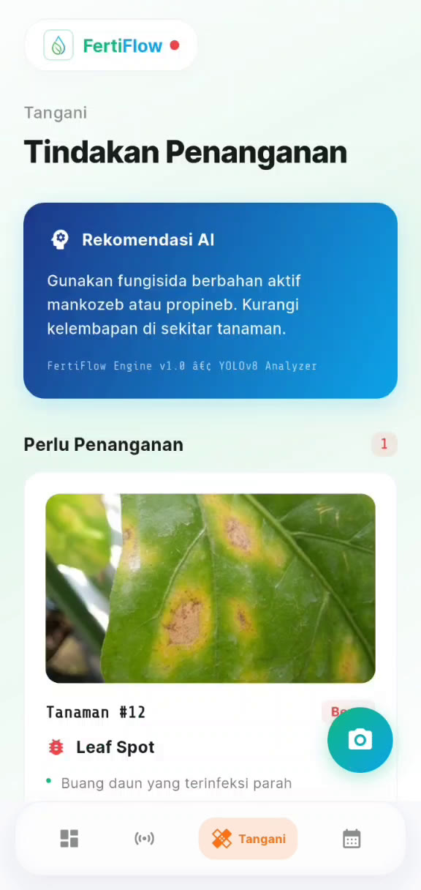
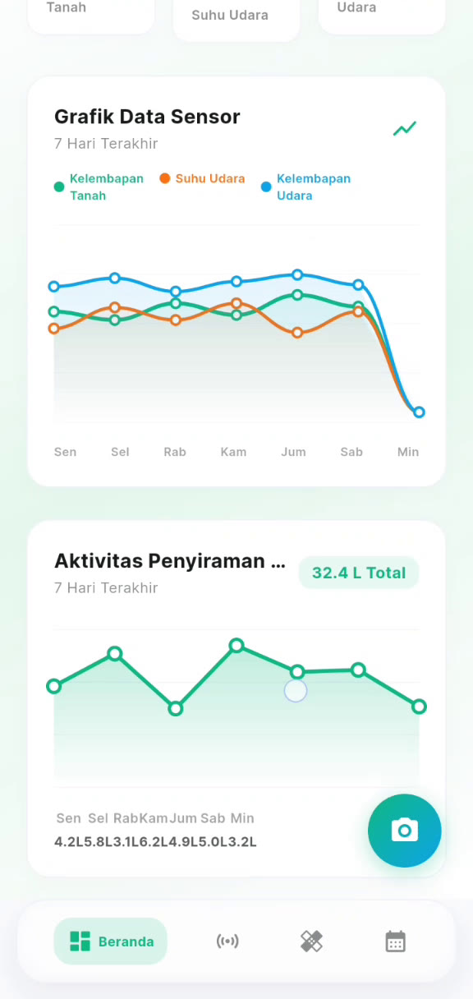

Air dan pupuk tepat takaran, lahan terpantau dari genggaman.
FertiFlow menghubungkan sensor di lahanmu dengan aplikasi di ponsel. Pantau kelembapan tanah dan suhu, atur jadwal penyiraman dan pemupukan, lalu foto daun yang sakit untuk didiagnosis oleh AI YOLOv8.

Sentuh tanamannya, kenali fiturnya
Klik angka pada tanaman cabai.

Pemantauan Sensor
Data dari sensor di lahan masuk ke ponselmu secara langsung, lengkap dengan grafik 7 hari terakhir.
Kontrol Pompa & Pestisida
Nyalakan penyiraman atau pestisida dari jarak jauh, atau biarkan mode otomatis bekerja. Level tandon dan pupuk selalu terlihat.
Jadwal Air & Pupuk
Tentukan hari, jam, dan volume dalam liter. Perangkat menyiram dan memupuk sendiri sesuai jadwal.

Diagnosis Hama AI
Foto daun dari kamera atau galeri. YOLOv8 menandai area yang terinfeksi, menyebut penyakitnya, dan tingkat keyakinannya.
Tindakan Penanganan
Setiap hasil deteksi jadi daftar tugas: langkah penanganan, saran pestisida, dan status sampai kamu tandai selesai.
Aktivitas Penyiraman
Liter air yang dipakai tiap hari tercatat otomatis, jadi kamu tahu total pemakaian air minggu ini.
Lihat aplikasinya langsung





- Memuat foto tanaman
- Mengekstrak fitur helai daun
- Menghitung tingkat keparahan
Lihat cara AI membaca daun yang sakit
Di aplikasi, kamu cukup memotret daun. Simulasi di samping menunjukkan tahapan yang terjadi setelahnya.
- Mendeteksi area penyakit. YOLOv8 menggambar kotak di bagian daun yang terinfeksi.
- Memberi tingkat keparahan. Hasil diberi label seperti Ringan, Sedang, atau Berat.
- Langsung ke solusi. Rekomendasi seperti fungisida mankozeb atau propineb muncul di tab Tangani.
Sebelum kamu mulai
Apakah saya perlu perangkat khusus?
Untuk pemantauan dan kontrol pompa, lahan perlu dipasangi perangkat FertiFlow (sensor dan ESP32). Fitur diagnosis hama AI bisa dipakai cukup dengan kamera ponsel.
Apakah perangkat butuh koneksi internet?
Ya. Perangkat mengirim data dan menerima perintah melalui Firebase, jadi ESP32 perlu tersambung ke Wi-Fi di sekitar lahan.
Bisakah penyiraman berjalan tanpa saya buka aplikasi?
Bisa. Jadwal yang sudah dibuat di tab Jadwal dijalankan perangkat secara otomatis, dan mode Penyiraman Otomatis bisa dinyalakan di tab IoT.
Penyakit apa saja yang bisa dideteksi?
Model YOLOv8 di aplikasi dilatih untuk mengenali masalah daun cabai seperti bercak daun, keriting daun, virus kuning, dan kutu kebul.
Kenapa fitur hanya ada di aplikasi, bukan di situs web?
Kontrol pompa dan kamera untuk diagnosis paling praktis dipakai langsung di lahan lewat ponsel. Situs web ini berisi informasi produk dan portal untuk admin.
Dibuat untuk petani yang ingin lahan lebih terukur
FertiFlow adalah sistem fertigasi cerdas yang menggabungkan Internet of Things dan kecerdasan buatan. Sensor di lahan mengukur kondisi tanaman, perangkat menyiram dan memupuk sesuai kebutuhan, dan AI membantu mengenali penyakit daun lebih awal.
Tujuannya sederhana: air dan pupuk dipakai seperlunya, dan masalah tanaman cepat ditangani.
- Aplikasi SelulerTampilan & fitur aplikasi Android
- IoT & PerangkatESP32, sensor, pompa, Firebase
- Kecerdasan BuatanData latih & model YOLOv8
- Situs Web & AdminSitus informasi & portal admin
Mulai pantau tanaman cabaimu hari ini
Unduh FertiFlow, hubungkan perangkat, dan buat jadwal penyiraman pertamamu dalam beberapa menit.